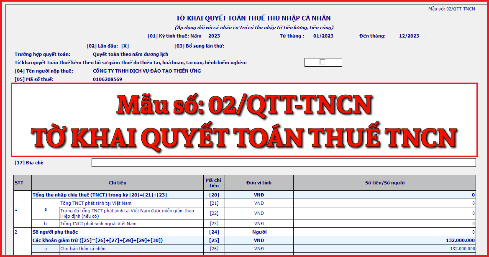

Mẫu tờ khai quyết toán thuế thu nhập cá nhân mới nhất năm 2024 là mẫu số: 02/QTT-TNCN được ban hành kèm theo Thông tư số 80/2021/TT-BTC. Đây là tờ khai thuế áp dụng đối với cá nhân cư trú có thu nhập từ tiền lương, tiền công
Cách kê khai Tờ khai quyết toán thuế thu nhập cá nhân - mẫu số 02/QTT-TNCN theo TT 80/2021 như sau:
I. Đối tượng áp dụng
- Các trường hợp cá nhân cư trú trực tiếp quyết toán với cơ quan thuế: (Theo quy định tại điểm d3 khoản 6 Điều 8 Nghị định số 126/2020/NĐ-CP)
- Có số thuế phải nộp thêm hoặc có số thuế nộp thừa đề nghị hoàn hoặc bù trừ vào kỳ khai thuế tiếp theo, trừ các trường hợp sau: cá nhân có số thuế phải nộp thêm sau quyết toán của từng năm từ 50.000 đồng trở xuống; cá nhân có số thuế phải nộp nhỏ hơn số thuế đã tạm nộp mà không có yêu cầu hoàn thuế hoặc bù trừ vào kỳ khai thuế tiếp theo; cá nhân có thu nhập từ tiền lương, tiền công ký hợp đồng lao động từ 03 tháng trở lên tại một đơn vị, đồng thời có thu nhập vãng lai ở các nơi khác bình quân tháng trong năm không quá 10 triệu đồng và đã được khấu trừ thuế thu nhập cá nhân theo tỷ lệ 10% nếu không có yêu cầu thì không phải quyết toán thuế đối với phần thu nhập này; cá nhân được người sử dụng lao động mua bảo hiểm nhân thọ (trừ bảo hiểm hưu trí tự nguyện), bảo hiểm không bắt buộc khác có tích lũy về phí bảo hiểm mà người sử dụng lao động hoặc doanh nghiệp bảo hiểm đã khấu trừ thuế thu nhập cá nhân theo tỷ lệ 10% trên khoản tiền phí bảo hiểm tương ứng với phần người sử dụng lao động mua hoặc đóng góp cho người lao động thì người lao động không phải quyết toán thuế thu nhập cá nhân đối với phần thu nhập này
- Cá nhân có mặt tại Việt Nam tính trong năm dương lịch đầu tiên dưới 183 ngày, nhưng tính trong 12 tháng liên tục kể từ ngày đầu tiên có mặt tại Việt Nam là từ 183 ngày trở lên.
- Cá nhân là người nước ngoài kết thúc hợp đồng làm việc tại Việt Nam khai quyết toán thuế với cơ quan thuế trước khi xuất cảnh. Trường hợp cá nhân chưa làm thủ tục quyết toán thuế với cơ quan thuế thì thực hiện ủy quyền cho tổ chức trả thu nhập hoặc tổ chức, cá nhân khác quyết toán thuế theo quy định về quyết toán thuế đối với cá nhân. Trường hợp tổ chức trả thu nhập hoặc tổ chức, cá nhân khác nhận ủy quyền quyết toán thì phải chịu trách nhiệm về số thuế thu nhập cá nhân phải nộp thêm hoặc được hoàn trả số thuế nộp thừa của cá nhân.
- Cá nhân cư trú có thu nhập từ tiền lương, tiền công đồng thời thuộc diện xét giảm thuế do thiên tai, hoả hoạn, tai nạn, bệnh hiểm nghèo ảnh hưởng đến khả năng nộp thuế thì không ủy quyền cho tổ chức, cá nhân trả thu nhập quyết toán thuế thay mà phải trực tiếp khai quyết toán với cơ quan thuế theo quy định.
II. Hướng dẫn khai tờ khai mẫu số 02/QTT-TNCN
* Phần thông tin chung:
[01] Kỳ tính thuế: Ghi theo năm của kỳ thực hiện khai thuế. Trường hợp cá nhân quyết toán thuế không trọn năm dương lịch (VD: cá nhân nước ngoài quyết toán thuế trước ngày 31/12, cá nhân quyết toán năm tính thuế thứ nhất theo 12 tháng liên tục kể từ ngày đầu tiên có mặt tại Việt) thì ghi từ tháng…đến tháng của kỳ khai quyết toán thuế.
[02] Lần đầu: Nếu khai thuế lần đầu thì đánh dấu “x” vào ô vuông.
[03] Bổ sung lần thứ: Nếu khai sau lần đầu thì được xác định là khai bổ sung và ghi số lần khai bổ sung vào chỗ trống. Số lần khai bổ sung được ghi theo chữ số trong dãy chữ số tự nhiên (1, 2, 3….).
Tờ khai quyết toán thuế kèm theo hồ sơ giảm thuế do thiên tai, hoả hoạn, tai nạn, bệnh hiểm nghèo:
Cá nhân có đề nghị miễn giảm do th thi tai, hoả hoạn, tai nạn, bệnh hiểm nghèo cùng với hồ sơ quyết toán thuế thu nhập cá nhân từ tiền lương, tiền công thì tích chọn vào ô trống.
[04] Tên người nộp thuế: Ghi rõ ràng, đầy đủ tên của cá nhân theo tờ đăng ký mã số thuế hoặc chứng minh nhân dân/căn cước công dân/hộ chiếu.
[05] Mã số thuế: Ghi rõ ràng, đầy đủ mã số thuế của cá nhân theo Giấy chứng nhận đăng ký thuế dành cho cá nhân hoặc Thông báo mã số thuế cá nhân do cơ quan thuế cấp hoặc Thẻ mã số thuế do cơ quan thuế cấp.
[06] Địa chỉ: Ghi rõ ràng, đầy đủ địa chỉ số nhà, xã phường nơi cá nhân cư trú.
[07] Quận/huyện: Ghi quận, huyện thuộc tỉnh/thành phố nơi cá nhân cư trú.
[08] Tỉnh/thành phố: Ghi tỉnh/thành phố nơi cá nhân cư trú.
[09] Điện thoại: Ghi rõ ràng, đầy đủ điện thoại của cá nhân.
[10] Fax: Ghi rõ ràng, đầy đủ số fax của cá nhân.
[11] Email: Ghi rõ ràng, đầy đủ địa chỉ email của cá nhân.
[12] Tên đại lý thuế (nếu có): Trường hợp cá nhân uỷ quyền khai thuế cho đại lý thuế thì phải ghi rõ ràng, đầy đủ tên của Đại lý thuế theo Quyết định thành lập hoặc Giấy chứng nhận đăng ký kinh doanh hoặc Giấy chứng nhận đăng ký thuế.
[13] Mã số thuế: Ghi đầy đủ mã số thuế của đại lý thuế (nếu có khai chỉ tiêu [12]).
[14] Hợp đồng đại lý thuế: Ghi rõ ràng, đầy đủ số, ngày của Hợp đồng đại lý thuế giữa cá nhân với Đại lý thuế (hợp đồng đang thực hiện) (nếu có khai chỉ tiêu [12]).
[15] Tên tổ chức trả thu nhập: Trường hợp theo quy định hiện hành nơi nộp hồ sơ quyết toán là cơ quan thuế quản lý tổ chức trả thu nhập thì ghi rõ ràng, đầy đủ tên tổ chức trả thu nhập (theo Quyết định thành lập hoặc Giấy chứng nhận đăng ký kinh doanh hoặc Giấy chứng nhận đăng ký thuế). Trường hợp theo quy định hiện hành nơi nộp hồ sơ quyết toán là nơi cư trú thì cá nhân không điền vào chỉ tiêu này.
[16] Mã số thuế: Ghi rõ ràng, đầy đủ mã số thuế của tổ chức trả thu nhập nơi cá nhân nhận thu nhập chịu thuế (nếu có khai chỉ tiêu [15]).
[17] Địa chỉ: Ghi rõ ràng, đầy đủ địa chỉ tổ chức trả thu nhập nơi cá nhân nhận thu nhập chịu thuế (nếu có khai chỉ tiêu [15]).
[18] Quận/huyện: Ghi rõ ràng, đầy đủ tên quận/huyện của tổ chức trả thu nhập nơi cá nhân nhận thu nhập chịu thuế (nếu có khai chỉ tiêu [15]).
[19] Tỉnh/thành phố: Ghi rõ ràng, đầy đủ tên tỉnh/thành phố của tổ chức trả thu nhập nơi cá nhân nhận thu nhập chịu thuế (nếu có khai chỉ tiêu [15]).
* Phần kê khai các chỉ tiêu của bảng:
[20] Tổng thu nhập chịu thuế (TNCT) phát sinh trong kỳ: Chỉ tiêu [20]=[21]+[23]
[21] Tổng TNCT phát sinh tại Việt Nam: Là tổng các khoản thu nhập chịu thuế từ tiền lương, tiền công và các khoản thu nhập chịu thuế khác có tính chất tiền lương tiền công phát sinh tại Việt Nam, bao gồm cả thu nhập chịu thuế được miễn theo Hiệp định tránh đánh thuế hai lần (nếu có).
[22] Trong đó tổng TNCT tại Việt Nam được miễn giảm theo Hiệp định: Là tổng các khoản thu nhập chịu thuế từ tiền lương, tiền công và các khoản thu nhập chịu thuế khác có tính chất tiền lương tiền công mà cá nhân nhận được thuộc diện miễn thuế theo Hiệp định tránh đánh thuế hai lần (nếu có).
[23] Tổng TNCT phát sinh ngoài Việt Nam: Là tổng các khoản thu nhập chịu thuế từ tiền lương, tiền công và các khoản thu nhập chịu thuế khác có tính chất tiền lương tiền công phát sinh ngoài Việt Nam.
[24] Số người phụ thuộc: Là số lượng người phụ thuộc đã đăng ký của cá nhân có thời gian được tính giảm trừ gia cảnh trong năm tính thuế.
[25] Các khoản giảm trừ: Chỉ tiêu [25] = [26] + [27] + [28] + [29] + [30]
[26] Cho bản thân cá nhân: Là khoản giảm trừ cho bản thân theo quy định của kỳ tính thuế.
[27] Cho những người phụ thuộc được giảm trừ: Là khoản giảm trừ cho người phụ thuộc theo quy định của kỳ tính thuế.
[28] Từ thiện, nhân đạo, khuyến học: Là các khoản đóng góp từ thiện, nhân đạo, khuyến học của kỳ tính thuế.
[29] Các khoản đóng bảo hiểm được trừ: Là các khoản bảo hiểm xã hội, bảo hiểm y tế, bảo hiểm thất nghiệp, bảo hiểm trách nhiệm nghề nghiệp đối với một số ngành nghề phải tham gia bảo hiểm bắt buộc của kỳ tính thuế.
[30] Khoản đóng quỹ hưu trí tự nguyện được trừ: Là tổng các khoản đóng vào Quỹ hưu trí tự nguyện theo thực tế phát sinh tối đa không vượt quá mười hai (12) triệu đồng/năm của kỳ tính thuế.
[31] Tổng thu nhập tính thuế: Chỉ tiêu [31] = [20] - [22] - [25]
[32] Tổng số thuế thu nhập cá nhân (TNCN) phát sinh trong kỳ: [32] = [31] x Thuế suất theo biểu thuế lũy tiến từng phần.
[33] Tổng số thuế đã nộp trong kỳ: [33] = [34] + [35] + [36] - [37] - [38]
[34] Số thuế đã khấu trừ tại tổ chức trả thu nhập: Là tổng số thuế mà tổ chức, cá nhân trả thu nhập đã khấu trừ từ tiền lương, tiền công của cá nhân, căn cứ vào chứng từ khấu trừ thuế của tổ chức, cá nhân trả thu nhập cấp.
[35] Số thuế đã nộp trong năm không qua tổ chức trả thu nhập: Là số thuế cá nhân trực tiếp kê khai với cơ quan thuế và đã nộp tại Việt Nam, căn cứ vào giấy nộp tiền vào ngân sách nhà nước của cá nhân.
[36] Số thuế đã nộp ở nước ngoài được trừ (nếu có): Là số thuế đã nộp ở nước ngoài được xác định tối đa bằng số thuế phải nộp tương ứng với tỷ lệ thu nhập nhận được từ nước ngoài so với tổng thu nhập nhưng không vượt quá số thuế là [32] x {[23]/([20] –[22])}x 100%.
[37] Số thuế đã khấu trừ, đã nộp ở nước ngoài trùng do quyết toán vắt năm: Là số thuế đã nộp ở nước ngoài trùng do quyết toán vắt năm. Số thuế đã nộp ở nước ngoài trùng do quyết toán vắt năm do cá nhân tự xác định nếu đã kê khai và nộp tại nước ngoài vào năm tính thuế thứ nhất. Trường hợp không xác định có số thuế đã nộp ở nước ngoài trùng do quyết toán vắt năm thì không phải kê khai vào chỉ tiêu này.
[38] Số thuế đã nộp trong năm không qua tổ chức trả thu nhập trùng do quyết toán vắt năm: Cá nhân tự xác định số thuế đã nộp trong năm không qua tổ chức trả thu nhập trùng do quyết toán vắt năm nếu đã kê khai vào năm tính thuế thứ nhất. Trường hợp cá nhân xác định không có số thuế đã nộp trong năm không qua tổ chức trả thu nhập trùng do quyết toán vắt năm thì không phải khai chỉ tiêu này.
[39] Tổng số thuế TNCN được giảm trong kỳ: [39]=[40]+[41]
[40] Số thuế phải nộp trùng do quyết toán vắt năm: Cá nhân xác định số thuế trùng do quyết toán vắt năm tại tổ chức khấu trừ vào chỉ tiêu này.
[41] Tổng số thuế TNCN được giảm khác: Cá nhân khai số thuế được giảm theo quy định của pháp luật không bao gồm trường hợp được giảm do thiên tai, hỏa hoạn, tai nạn, bệnh hiểm nghèo ảnh hưởng đến khả năng nộp thuế.
[42] Tổng số thuế còn phải nộp trong kỳ [42]=([32]-[33]-[39])>0: [42]=[32]-[33]-[39] trong trường hợp [42]=([32]-[33]-[39])>0
[43] Số thuế được miễn do cá nhân có số tiền thuế phải nộp sau quyết toán từ 50.000 đồng trở xuống: Cá nhân chỉ ghi số thuế được miễn sau quyết toán bằng chỉ tiêu [42] trong trường hợp 0<[42]<=50.000 đồng.
[44] Tổng số thuế nộp thừa trong kỳ: [44]=([32]-[33]-[39])<0, cá nhân có số thuế nộp thừa được ghi vào chỉ tiêu này theo số dương.
[45] Tổng số thuế đề nghị hoàn trả: [45]=[46]+[47]
[46] Số thuế hoàn trả cho người nộp thuế: Cá nhân có số thuế nộp thừa và đề nghị hoàn thì ghi vào chỉ tiêu này.
[47] Số thuế bù trừ cho khoản phải nộp ngân sách nhà nước khác: Cá nhân có số thuế nộp thừa và đề nghị bù trừ cho các khoản phải nộp Ngân sách nhà nước khác (bao gồm khoản nợ ngân sách, khoản phát sinh phải nộp của các loại thuế khác như giá trị gia tăng, môn bài, tiêu thụ đặc biệt..) thì ghi vào chỉ tiêu này (không vượt quá chỉ tiêu [45]).
[48] Tổng số thuế bù trừ cho các phát sinh của kỳ sau: Chỉ tiêu [48]=[44]-[45]
